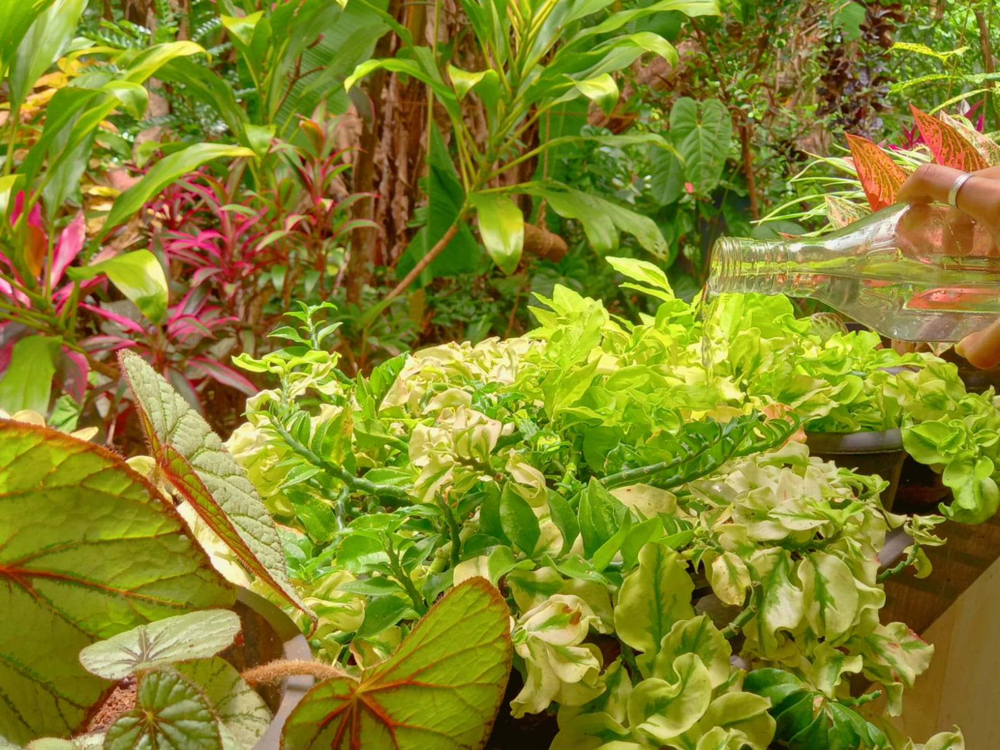
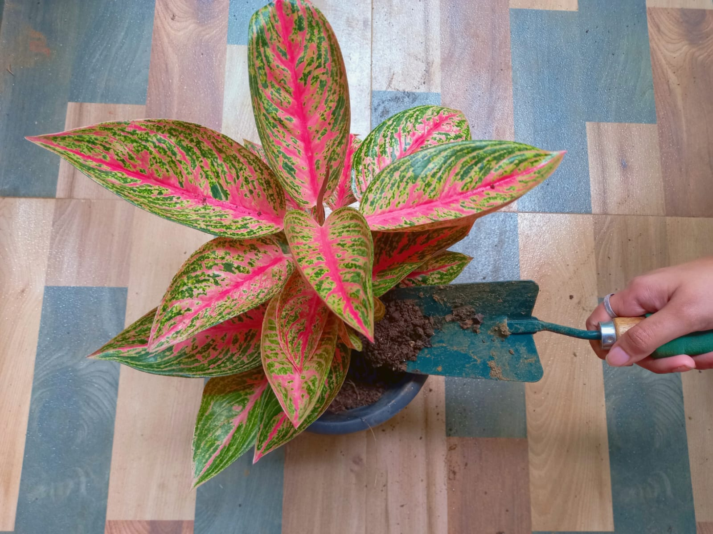

Gardening is a wonderful hobby that can be both relaxing and rewarding. This is the hobby that I do most of the time.It involves cultivating and nurturing plants, whether it's flowers, vegetables, or fruits, and taking care of
them to help them grow and flourish.
One of the great things about gardening is that it allows me to connect with nature and
enjoy the beauty of our outdoors. Whether you have a small balcony or a large backyard, there are many ways to create a garden that reflects your personal style and preferences.
When you start gardening, you'll need to consider a few things like the type of soil you have,
the amount of sunlight your garden receives, and the climate in your area.
You'll also need to choose the plants that are best suited to your environment and your level of experience.
As you gain more experience, you can experiment with different types of plants and techniques,
such as companion planting or raised bed gardening. You may even decide to start growing your own fruits and vegetables, which can be a fun and rewarding way to eat
fresh and healthy food.
Gardening can also be a social activity, as you can join a gardening club or community

garden where you can share tips and ideas with other gardening enthusiasts. It's a great way to meet new people and learn from their experiences.
Finally, gardening can be a stress-relieving activity that can help you relax and unwind after a long day at work. It's a great way to take a break from the digital world and connect
with nature.
gardening is a wonderful hobby that can bring many benefits to your life. It can help you connect with nature, eat fresh and healthy food, meet new people, and reduce
stress. So why not give it a try and see how it can enrich your life?